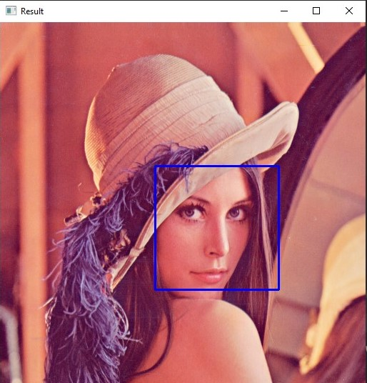

import cv2
# Load the cascade classifier for detecting faces
face_cascade = cv2.CascadeClassifier("haarcascade_frontalface_default.xml")
# Set up the webcam
cap = cv2.VideoCapture(0)
while True:
# Read the frame from the webcam
_, frame = cap.read()
# Convert the frame to grayscale
gray = cv2.cvtColor(frame, cv2.COLOR_BGR2GRAY)
# Detect faces in the frame
faces = face_cascade.detectMultiScale(gray, 1.1, 4)
# Draw a rectangle around the detected faces
for (x, y, w, h) in faces:
cv2.rectangle(frame, (x, y), (x + w, y + h), (255, 0, 0), 2)
# Display the resulting frame
cv2.imshow("Facial Recognition", frame)
# Break the loop if the user presses 'q'
if cv2.waitKey(1) & 0xFF == ord('q'):
break
# Release the webcam
cap.release()


The facial recognition project initially evaluates various haarcascade files to identify specific objects within images. During the first test, various methods of image preprocessing are examined, such as dilation, blurring, canny, erosion, and conversion to grayscale, to facilitate image comparison. In the second test, manual adjustments to the image's hue, saturation, and value (HSV) are explored to gain a deeper understanding of how to manipulate images for improved detection.